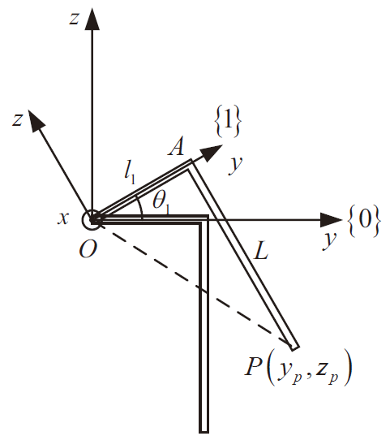
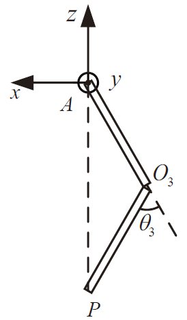

四足机器运动控制系列————单腿运动学
正运动学
正运动学(forward kinematics)是指根据关节的角度求解机器人各关节以及末端的位姿。对于四足机器人来说，问题简化为通过三个关节的角度计算足底的位置。
旋转矩阵
定义绕$x,y,z$轴旋转的旋转矩阵分别为$R_x, R_y, R_z$，则表达式为：
单腿正运动学计算
首先，已知量有：
- 侧摆关节、髋关节和膝关节的旋转角度
- 侧摆连杆、大腿连杆和小腿连杆的长度
- 侧摆关节在身体坐标系下的位置
然后，先求解在髋关节坐标系下的足底位置，公式如下：
解得
再求解在侧摆关节坐标系下的足底位置，公式如下：
可解得
最后，求解在身体坐标系下的足底位置，公式如下：
最终得到：
在上述公式中，
逆运动学
逆运动学则与正运动学相反，是在已知末端位姿的条件下，求解各个关节的角度。对于四足机器人来说，是根据足底位置来求解三个关节的角度。
求解逆运动学更一般的方法是通过数值方法，但由于四足机器人的逆运动学问题较为简单，可以直接通过解析法求解。
解析法
若已知在侧摆关节坐标系下的足底位置
则各个关节的角度计算公式如下：

首先计算侧摆关节
其中
由此可得：

接着求解膝关节角度：
在$\triangle AO_3P$中，由余弦定理有：
其中
因此，
最后求解髋关节角度：
根据正运动学公式可得：
令：
则有，
最后可解得：
雅可比矩阵
末端速度与关节角速度之间的映射关系通过雅可比矩阵来表达，对于四足机器人，雅可比矩阵可以通过对正运动学得到的结果求导得到：
此外，雅可比矩阵还可以做足端力和关节力矩之间的映射：
逆运动学的数值求解
基于雅可比矩阵，可以进行逆运动学的数值求解，原理在于通过迭代方法，不断缩小与目标位姿的差距，其算法流程如下：
- 初始化关节角度
- 根据正运动学求解末端关节位姿
- 与目标位姿作差，得到误差值
- 根据位姿误差，得到关节角度修正量
- 更新关节角度，返回2
以上流程在位姿误差小于设定的阈值或到达最大迭代步数时退出。
程序验证
本博客所有文章除特别声明外，均采用 CC BY-NC-SA 4.0 许可协议。转载请注明来源 Great New Dog's Blog！